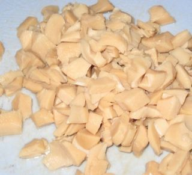
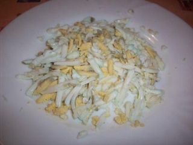
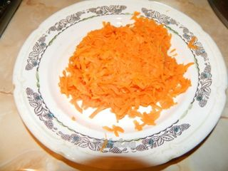
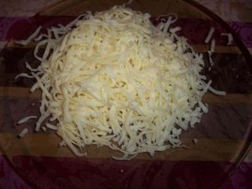
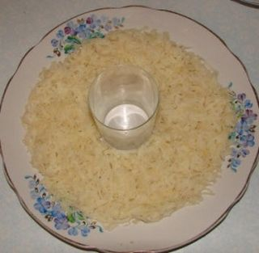
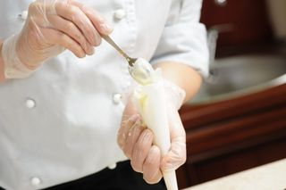

Шаг 1: Подготовим ингредиенты.

Кальмара необходимо слегка промыть проточной водой от маринада из банки и мелко нарезать.

Отварить заранее куриные яйца в подсоленной воде 10 минут после закипания, после чего их необходимо охладить полностью в холодной воде, очистить от скорлупы и натереть на крупной тёрке.

Морковь тоже необходимо отварить до готовности, очистить и натереть крупно.

Сыр на 10 минут отправляем в холодильник, после чего трём на средней тёрке. В майонез добавляем ранее очищенный и мелко нарезанный чеснок. Перемешиваем массу. Этим составом будем смазывать слои нашего салата.
Шаг 2: Делаем слоёный салат.

Первым делом нужно найти большое блюдо. В центр выставим 700 граммовую банку (или стакан) и вокруг нее начнём готовить салат.
Первый его слой будет состоять из тёртого куриного яйца. Необходимо аккуратно насыпать вокруг стакана, чтобы не сильно рассыпалось. Промазываем майонезом первый слой. Поверх яйца идёт мелко нарезанный кальмар. Опять смажем майонезом. Каждый слой советую немного прижимать, чтобы майонез ложился ровно и не прилипал к ложке, которой его мажем. Берём морковь и выкладываем следующим слоем. Опять майонез.

Самое главное и вкусное, по-моему мнению, – это верхнее украшение сам тёртый сыр. Из майонеза пробуем сделать подобие волн. Для этого при желании можно даже воспользоваться кулинарным мешком или плотным полиэтиленовым мешком со срезанным уголком. И на самом последнем месте, но не самом последнем по вкусу и цене, конечно, у нас идёт красная икра, которая завершает процесс приготовления. После того, как салат будет сформирован, извлекаем из середины банку, но делаем это так, чтобы не нарушить целостности изделия.